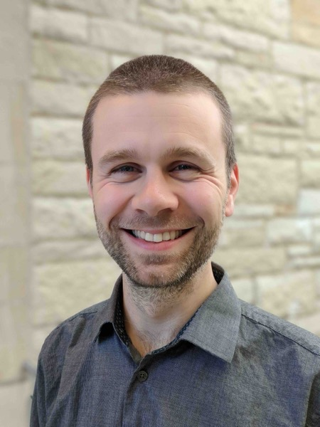
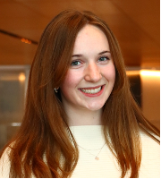
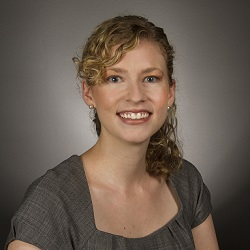
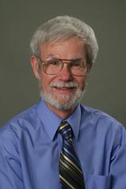
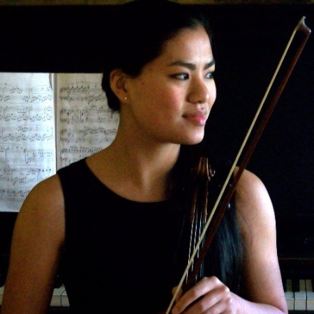
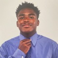

The team
Principal Investigator

Professor of Instruction · Michael Jaharis Director of Experiential Learning
Department of Biomedical Engineering, McCormick School of Engineering, Northwestern University
David read Engineering Science at Oxford (University College), earning an M.Eng. in 2008 and a D.Phil. in 2012. He completed postdoctoral work in the Robbins Group (Dept. of Physiology, Anatomy & Genetics, Oxford), developing novel respiratory monitoring technology and computational models of blood gas transport, before joining the Department of Biomedical Engineering at Northwestern University in 2018.
His research examines engineering and research scientist identity, doctoral student wellbeing, and the cultures of mentorship and assessment that shape engineering education. He is the Associate Director of the Northwestern Center for Engineering Education Research (NCEER).
David teaches across the BME curriculum, including core courses in Fluid Mechanics, Signals and Systems, and the Senior "Capstone" Design Sequence. In service roles, he oversees undergraduate research, runs the Department Honors program, and manages teaching operations for the BME department.
Postdoctoral Fellow
Postdoctoral Research Fellow, Dept. BME, McCormick School of Engineering, Northwestern University
Research interests: the intersection of race, power, and STEM education; experiences of underrepresented Asian American populations in STEM.
Ph.D. Science Education, Dept. Curriculum & Instruction, University of Illinois Chicago. Ed.M. and M.S. Teacher Education, Harvard Graduate School of Education. B.S. Aerospace Engineering, Florida Institute of Technology. Before his postdoc, taught high school physics for 20 years in Chicago Public Schools.
At ECCE, Johan leads the longitudinal study of BME doctoral students' wellbeing and identity development through qualifying examinations.
Selected publications:
Undergraduate Researchers

Undergraduate Researcher, 2024–present
Kate contributes to the Office Hours project and the doctoral student engineering identity and wellbeing project. She is a co-author on three papers accepted to the 2026 ASEE Annual Conference.
Selected publications:
Collaborators
PhD Candidate Collaborator, 2024–present
Ethan works on implicit and explicit measures of engineering and research science identities in doctoral students.
Selected publications:

Casey Ankeny — Dept. of Biomedical Engineering, Northwestern University
Rick McGee — Feinberg School of Medicine, Northwestern UniversityPast Members
Emily Schafer — Searle Teaching-as-Research Scholar (PhD candidate), 2020–2024
Office hours and student–instructor relationships project.
Improving Student–Instructor Relationships through Office Hours (ASEE 2023) 🏆

Aurora Greane — Undergraduate Researcher (BME Summer Award; URAP), 2021–2024
NSF mentoring identity project. Now a PhD student at the University of Melbourne.

Tyson Strong — Undergraduate Researcher (Civil Engineering; URAP), 2024–25
Office Hours project.
Post-Pandemic Motivations and Barriers for Office Hours (ASEE 2025) 🏆
Jordan Denzler — Undergraduate Researcher (SESP; URAP), 2024–25
Office Hours project.
Post-Pandemic Motivations and Barriers for Office Hours (ASEE 2025) 🏆